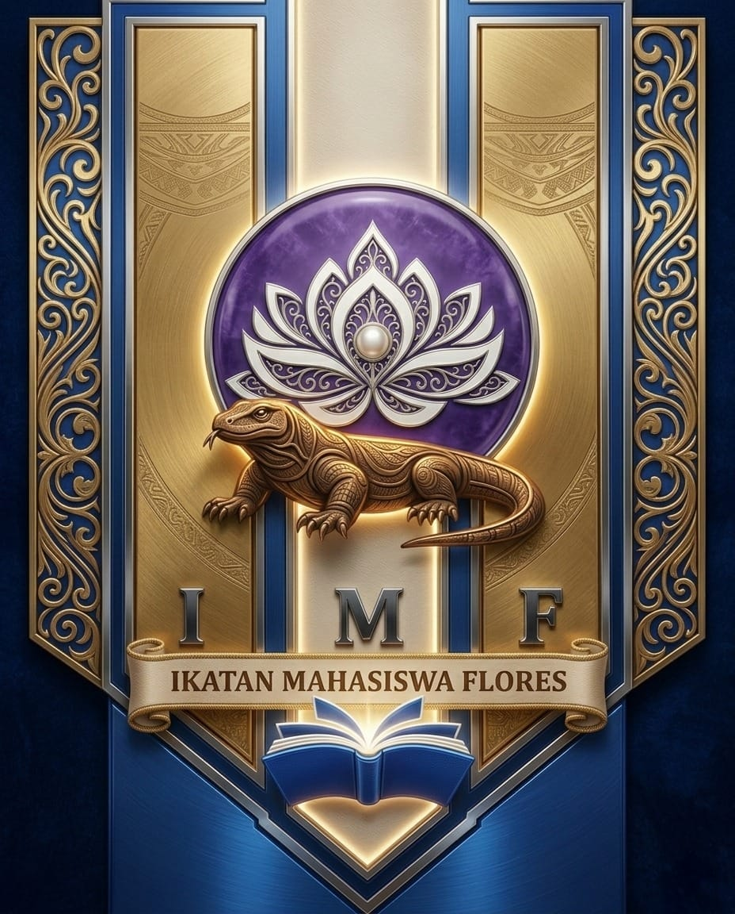

IMF NASIONAL
Ikatan Mahasiswa Flores Jakarta

Ikatan Mahasiswa Flores Jakarta
📍 Jl. Mayjen Sutoyo No.2, Cawang, Kramat Jati, Jakarta Timur[cite: 4, 29].
📞 082310584773 / 081315377052 [cite: 5, 30]
📧 ikatanmahasiswaflores@gmail.com [cite: 5, 30]
Melambangkan mahasiswa Flores sebagai penjaga warisan budaya (Heritage) yang tangguh dan adaptif, namun tetap membumi.
Melambangkan kesucian nurani dan kebijaksanaan (wisdom) yang menjadi inti dari setiap langkah perjuangan.
Menyimbolkan "Ketajaman Nalar". Intelektualitas harus menjadi pelita yang menerangi jalan bagi masyarakat.
Mewakili struktur organisasi yang kokoh, profesional, dan integritas yang tidak tergoyahkan.
Mengingatkan bahwa setinggi apa pun pendidikan, mahasiswa Flores tidak boleh melupakan akar budaya dan etika ketimuran.
"Mewarisi semangat Nusa Bunga, menjadi perpaduan antara ketajaman nalar intelektual dan kemurnian nurani manusia."
Ketua Umum: Gregorius GDJ Putra [cite: 20, 35]
Developed by DarkWhite